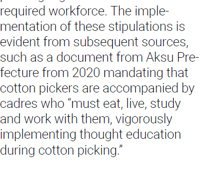

Refuting "Labor Transfer and the Mobilization of Ethnic Minorities to Pick Cotton"
By @Silmarillion88, March 2021
This is a refute of Adrien Zenz’s report titled Coercive Labor in Xinjiang: Labor Transfer and the Mobilization of Ethnic Minorities to Pick Cotton, published December 2020 by the Center for Global Policy. This refute was originally published on Twitter.
Housekeeping matters first:
- My friend @laurimyllyvirta challenged me to refute the claims made in this report, saying "if it's so bad, why hasn't anyone refuted it yet?" Here's my attempt at this.
- Engaging with Zenz in any shape or form has already resulted in at least one, maybe two of my friends being perma-banned from Twitter. If I get perma-banned soon after this, you know what has happened. If you want to keep contact, my DM is open.
My method is simple: read his report page by page, go into each sentence, verify citations and evaluate logic chain. It's a long report so the thread will be relatively long.
OK here we go. Below will be structured in accordance with the structure of his report.
1 Introduction to Cotton in Xinjiang
I don't have much to refute here, because the states are largely accurate, and relating to the cotton industry rather than any claim of forced labor. Only one data point was found to be dated: on P.5 the latest number for Southern XJ cotton mechanization should be 40% as of Sep 2020. Zenz's number is also accurate as of Oct 2019.
However, it is clear from this chapter that Zenz realizes the strategic importance of XJ cotton for XJ and for China, in terms of employment, GDP, supply chain and average income.
2 The Coercive Nature of XJ's Transfer of Rural Surplus Laborers
This part is very problematic, because it suffers from:
- serious mis-translation of all sorts and
- montage of irrelevant details into a distorted narrative. Here are the incidents in order of pages.
FN (footnote) 25: Zenz cites this paper:
"Han officials complain that "Uyghur workers lacked discipline and stability, resulting in low retention rates and a general unwillingness of the predominantly Han Chinese bosses to hire minority laborers."
However, in the actual paper linked, the author got these observations from actual business owners and Uyghur workers themselves. Zenz implies these remarks are a cultural embedded stereotype while the author properly places their citations and sources. In that very paper, one proficient Uyghur technician said: "some of our people are not diligent at learning new techniques; some of us do but these are few." Zenz avoids these more realistic observations and frames them into simple bigotry.
Also on P.10 Zenz mentioned the "internment camp" issue. Given this thread is focused on the core contention of his paper, forced labor, I will omit any claims made in this regard.
On P.11, Zenz mentioned this "first official document on precise poverty alleviation". However his citation is wrong: it refers to the same paper in FN 28.
This could be a technical error. However, Zenz said the document called for a detailed targeting of households via a surveillance oriented database. Because of the mis-citation, we can't really evaluate the accuracy of this claim.
It should be noted though the term 精准扶贫 is a very famous and commonly used term throughout China's poverty alleviation campaign nationwide. There is no evidence showing this concept is adopted differently in XJ than elsewhere. It simply means: as opposed to crude, money / resource based efforts, the approach focuses more on the local situations, and offers a tailor made solution addressing the condition of each village, and even each households. The background is that China's rural poor areas are often remote to one another and population base often scarce as opposed to crowded.
Re FN 31, Zenz mentioned "sprinkler irrigation" and "drip irrigation" - accurate translation which show you the 精准扶贫 term's focus is on the effectiveness of the resource and solution. I don't see any problem with these measures.
On P.12, there is an important omission where Zenz mentioned that in 2016 XJ made a plan which explicitly specified labor transfer. It called for "transformation of views on employment". Zenz thinks this is "thought transformation". However 改变就业观 is a very common term used in China in all places, and to equate it with some sort of indoctrination is simply absurd. There is no citation for this quote so we cannot verify the original text either. Anyway, these are still largely space-fillers with no substance. However Zenz spent almost half a page on p12 talking about this document, without providing a link.
FN37 is a mis-translation in bad faith. Zenz stresses intensified indoctrination" while the notice merely says 要加强思想教育和民族团结教育，引导各族务工群众遵纪守法，自觉抵制非法宗教活动，相互支持、相互帮助，在拾花等劳务创收中增进民族团结，维护社会稳定。
Translation: we must enhance thought education and education on unity of ethnicities, we must lead workers of all ethnicities to abide by laws, and willingly resist illegal religious activities, help each other, so that we can earn more income picking cotton and at the same time promote ethnic solidarity and social stability. Does this sound highly problematic, coercive and violent? Or does it sound like typical party speech?
Notably, in this multi-paragraph notice, only above sentence was talking about the scary "indoctrination", while the rest are all about the
logistics and arrangements: salary negotiations (make sure we got clear terms for wages and receipts); transportation; and even "we must buy accidental insurance for our workers" (!!) But anyway, for those of you who can read Chinese, I highly encourage you to read these docs.
Zenz made another flaring "quote" without citation below, on how cadres must "eat, live, study and work with them" and "thought educate" them. I'd really want to see the original text please.

Sec 2.3 is highly interesting as Zenz seems to be employing creative narrative again.
His focus here is "militarized training and thought transformation". Scary stuff.
Luckily we get a link to verify the original here. FN 38 shows us some of the things really being done here.
In China, all universities, and many public and private companies, adopt military training with their students and new joiners. They are very tough but fun. Please note Zenz said "militarized training" while the Chinese is 军训 which is really military training. In the latter, which is what really happens here, you receive drills such as military march, how to aim a rifle, how to perform various simple ops in a small group etc. It's a form of team building, with Chinese characteristics. Anyone who joined these trainings can confirm they are not the "Fullmetal Jacket" sort of hell on earth.
In another link in FN38, the govt even mentioned they will subsidize anyone who signs up to these trainings with 65 - 500 yuan per day as incentive. Do you do that to "coerce" the "slaves"? Or do you offer that to people to encourage them to learn new skills?
The below claim is highly problematic because it clearly implies something very draconian: iron-like / obedience, except you can't find these words anywhere in any of these links Zenz provides as sources!
Zenz is kind enough to provide several links here, for example this one, archive.is/S4yiT "100 Q&A on help and support to get employed". If you are interested you can get a sense from their substantial amount of govt support to encourage and incentive local people to get employed. How is any of this coercive?
Zenz’ creativity is far from over. Here he talks about the party describing the Uyghurs as "backwards", but again guess what, there's no mention of such words in his sources. In FN39, Uyghur workers who joined the program highly praised it, saying the following.
Translation: "I learned so much and broadened my perspectives when I came out of the village and into the school. I enjoy it a lot now. This Aksu textile school isn't only free on tuition and accommodation; it helps my employment."
If Zenz's evidence is CCP documents, he has surely taken away all the positive ones, while creatively warping some bits and pieces of info into "negatives". Without supplying his own independent research evidence, this practice does indeed look highly biased and dishonest.
FN 41: Zenz is very obsessed with the 五同 efforts
Namely, this is to ask for some cadres to "eat, sleep, and work" together with certain households. His claim that this is done to further enhance the "coercive job transfer" is inaccurate because the party really first placed certain cadres to conduct 五同, and only take advantage of this opportunity when they need to encourage people to receive skill trainings.
Zenz then throws his bomb without any source:
And below. To be honest at this point my impression is that what he's been doing is simply cutting out "useful" bits of info from a narration, and inserting his own ideas. He doesn't provide any evidence how these workers are "coerced" or why they are deemed as "second class".
The alternative hypothesis, ironically being repeatedly promoted by the very citations he uses, that the people receive proper job training and go on to enjoy their job and increased earnings, is entirely removed without any address as if they don't exist.
3 Evidence of Coercion in the Recruitment, Transfer, and Management of Transferred Laborers in Xinjiang’s Cotton Picking Sector
Next, Zenz proceeds to make more claims without giving any proof on how CCP deems Uyghurs, that they are deemed as "lazy" and "narrow minded" until being saved by the glorious CCP. The very citation FN42 though, speaks of a different story: a Uyghur father mired by family difficulties broke through poverty with the govt's help. In no part of this story were the derogatory terms Zenz utters mentioned.
Of course, Zenz continues to make more claims without giving any evidence, implying that the poverty alleviation campaign was vile and largely unnecessary.
Why don't you give us some sources, since these claims are so crucial to your logic chain?
The next topic Zenz picks up is "invasive social monitoring at family level". He's basically saying there's no evidence of coercion, but since we can't be sure the CCP must be guilty. I mean..
The next bit makes me chuckle. Friends, if promoting a concept of "labor is glorious and laziness is shameful" is considered "coercive", then I guess anyone with traditional Chinese culture is considered a criminal. My mom was certainly not innocent in this regard schooling me!

It's funny how every serious accusation Zenz makes lacks sources. This one is more related to "concentration camps" but our respected German scholar is exempted from showing his sources I guess.
Again another scary claim of children deprivation and oppression, without any source.. We have seen the CCTV reports of how these kids are doing. So I guess it's just our words (*and videos*) against his WORDS. PS: you have any idea how HK parents would love for the govt to
offer central toddler caring so that they could both work full time? Just saying.
Zenz seems to be horrified by how many things in China can be done "streamlined". He seems to imply this is an iron hand over the Uyghur's head. However if we really think about it, is it that bad? If the government is going to organize any large scale efforts, let's say COVID or hurricane relief, should they plan and coordinate centrally? Or should they allow each division to move about like pollens in Brownian motion? In FN49 and 50, reports highlight the advantages of these arrangements. If Zenz thinks otherwise, he should provide clear reasoning and alternative evidence.
Zenz is funny in that he seems to be projecting his own contempt of the Uyghur people onto the Party. Notice his choice of words: "strong-willed", implying stubbornness.
However if you check the original Chinese text, the word used is 坚强, which should be translated as resilient or tough. Meanwhile, 朴实 which should be translated as unassuming and down to earth is translated as simple minded. I sense a white patron when I see one, Mr. Zenz.
The disgusting thing is of course that he portrays these as CCP's coining of the Uyghur spirit!
But hey, the disgust doesn't end there. He proceeds to make more distortions. He says the cadres "make demands, the first being workers shouldn't move freely."
CCP cadres are like officers of the Reich, eh? Why don't you give the proper translation, together with the other two pieces of info? "Secondly, please take good care of your body. We must maintain good health to cope with the heavy work. And finally, if you have any sorts of issues, please come to us for support. We will forever be your strong support team.." Why don't we give an accurate translation to materials, since you even cite them in your own text?
And notice how in the below "excerpt" the accompany cadre is again portrayed as Gestapo, without any citation
Guys, we are getting the hang of it, do we? Whenever Mr. Zenz decides to make an especially scary claim, it's always without any source. See below:
Zenz seems particularly against extolling of labor or anything like that. Does that have anything to do with his seemingly lazy style of writing and citation? I don't know.
In this paragraph, Zenz seems to engage in a sort of doublespeak: the fact that cadres go to houses of workers and send their families gifts demonstrates "coercion". How does the logic work?
At this point it seems to me he's merely stating something warm, agreeable, fun, and
insert in front of them "COERCION!!". How does this logic even work? And please, stop calling Uyghurs "simple". The party never said that in your sources.
We are approaching the end of the paper. Last but not least, Zenz comments on the average salary of the cotton pickers. Amazingly, he (or his intern?) gives only three data points. He doesn't really use any of the official data which is higher, but according to his three sources, they each earned 1670, 1805, and 4800 yuan respectively. Zenz concludes that "it is concerning that these averages are lower than the region's minimum wage."
Do I need to highlight the problems? First, all three numbers are source-less, meaning they could be entirely fabricated.
I could also say that workers on average make one million yuan, but I'm not as clueless to my research as someone. Or shall we do this?
Secondly, the outward extrapolation from 3 data points (let's say they are real) to his claimed "500,000" workers seems to be... typical Zenz?
We all remember how he claimed to have interviewed eight people, drawing the conclusion of "concentration camps" of more than one million?
I just simply state what he does, guys. Make your own calls.
Summary
OK finally, let's summarize into TLDR for this critique of the Zenz paper:
- The most crucial problem of the paper is lack of concrete evidence. Zenz makes a bunch of sensational and scary claims, but his sources are either Chinese official documents, in which he deliberately omits any statement contrary to his narratives or makes false translations; or he doesn't bother to give any source at all. This paper should be called what it is: as a research piece it fails the basic test of citation and fact base.
- Zenz cleverly uses narrative capabilities in combination with western audience's lack of familiarity with Chinese language, social terms and practices, to portray things in the scariest way possible. What's done in China's poverty alleviation efforts at a nationwide level isn't much different than what's done in Xinjiang: cadres live with the significant poor families; the party and govt helps organize entire supply chain, material, financing and training; media and govt staff heavily "bombard" the local people with values such as "to work hard and earn money is awesome, to live idly earning little is shameful". If you are not familiar with all this, I recommend a recent blockbuster TV series called 山海情 Romance of the Mountain and Sea (my own crappy translation but the show is awesome).
- Finally, I just want to say this is my first jab at debunking Adrian Zenz systematically. Please do reach out to me if you want to discuss further.